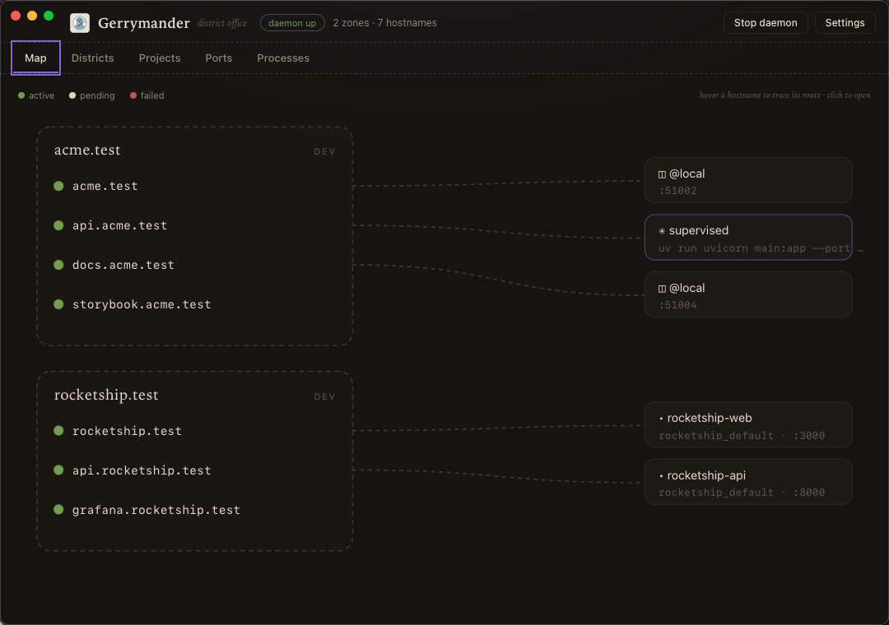
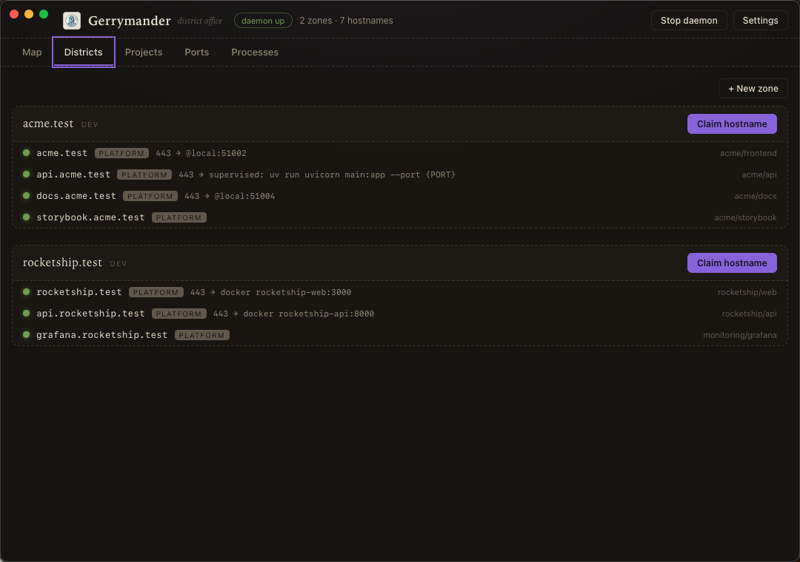

Quickstart¶
From nothing to https://my-app.test with trusted TLS, and an understanding
of what actually happened.
1. Install¶
curl -fsSL https://raw.githubusercontent.com/Nano112/gerrymander/main/install.sh | sh
One command: platform detected, binary installed, then gerry bootstrap
runs automatically: daemon on login, DNS for dev zones, TLS trust. With
brew it's two: brew install nano112/tap/gerry && gerry bootstrap.
GERRY_INSTALL_ONLY=1 skips the bootstrap if you want the pieces
separately (steps 2–3 below are what it does for you).
2. Run the daemon¶
gerry service install # launchd on macOS, systemd --user on Linux
gerry status # doctor: daemon / DNS / proxy / trust checklist
The daemon is the registry (SQLite at ~/.gerrymander/gerry.db), a TLS
proxy with its own local CA, an embedded DNS server for dev TLDs, and a
process supervisor.
3. Wire the machine, reversibly¶
gerry setup
This routes dev TLDs (like .test) to gerry's DNS and installs the CA into
your trust store. Every file it writes is marker-tagged; TLDs that already
resolve (dnsmasq, Herd) are skipped, and gerry uninstall removes only
gerry's own marks, so it can never break DNS it didn't set up. See
Coexistence for the full interference matrix.
4. A project¶
cd my-app
gerry init # writes gerrymander.yaml
# gerrymander.yaml
project: my-app
zone: my-app.test
services:
frontend:
hostnames: [my-app.test]
dev: "bun run dev"
api:
hostnames: [api.my-app.test]
dev: "uv run uvicorn main:app --port {PORT} --reload"
Then either:
gerry dev # run everything: ports granted, manifest applied,
# prefixed output, group shutdown
or, for Vite projects, add the plugin and forget gerry exists:
// vite.config.js
import gerrymander from "gerrymander-vite";
export default { plugins: [gerrymander()] };
bun run dev now applies the manifest, gets the service's sticky port, and
serves https://my-app.test with working HMR over TLS.
5. Containers too¶
# docker-compose.yml
services:
api:
image: my-api
labels:
- gerrymander.hostname=api.my-app.test
# optional: gerrymander.port=8080, gerrymander.network=mynet
docker compose up claims the hostname and routes to the container (even
with no published ports; gerry maintains a relay). down releases it.
What just happened¶
my-app.testandapi.my-app.testare allocations in a local registry.gerry lsshows them,gerry rename api.my-app.test api2renames atomically, releasing frees the name.- Ports are sticky per owner: the same service gets the same port tomorrow, from a pool that avoids 3000/5173/8000/8080.
- The proxy's 404/502 pages are diagnostic and self-recovering: they tell you which backend is down and reload when it returns.
The same registry, with the same semantics, runs in production. See Kubernetes.
The desktop app¶
The Map view traces every hostname to its backend; Districts manages claims; Ports shows every listener cross-marked with registry grants.

